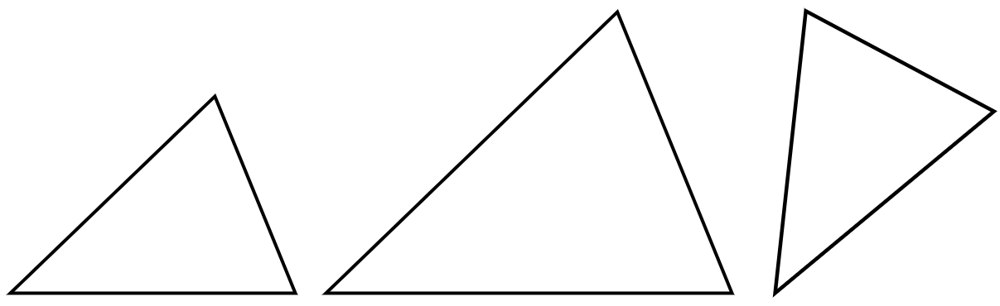
では、相似な直角三角形を考えてみましょうか。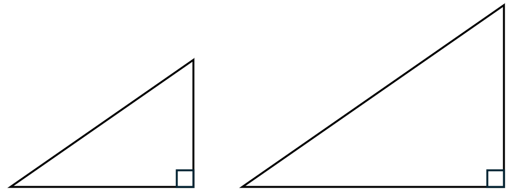
何か気づきますか？ いや気づくってなんだよって感じですが(笑) たとえば、ここの角度が決まっているとしましょう。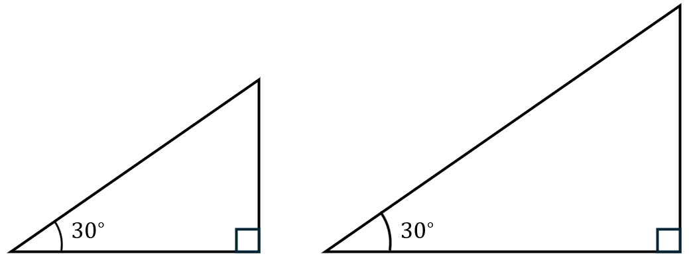
今回は30°ということにしますね。実はこの時点で、三角形の形というのはすでに確定しているんです。つまり、「直角以外の一つの角度が30°の直角三角形を書いて！」と言われたら、誰が書いても絶対に同じ形にしかなりません。あえて数学の言葉を使って言うのであれば、100人の人が「1つの角度が30°の直角三角形」を書いたら、100個全部相似です。（大きさは違うから合同じゃないですけどね！） あれ？角度の情報ってめちゃくちゃ重要じゃない？ そうなんです。どうですか？角度という情報を凝縮した新しい概念が欲しくなってきました！？━━━━━━━━━━━━━━━━━━━━━━━━━━━━━━━━
■ 相似な図形の性質
相似な直角三角形をちょっと観察してみましょう。2人の人に、「1つの角が30°の直角三角形を書いて！」とお願いしました。こうなったとしましょう。 さて、相似な三角形には、こんな性質がありました。・3つの辺の比がそれぞれ等しい
つまり大きい三角形の斜辺（一番長い辺）が、小さい三角形の斜辺の3倍だったとしましょう。そうすると、ほかの辺の長さも全部3倍ってことです。 じゃあ、次の図の青い部分の長さを、赤い部分（斜辺）の長さで割った値はどうなりますか？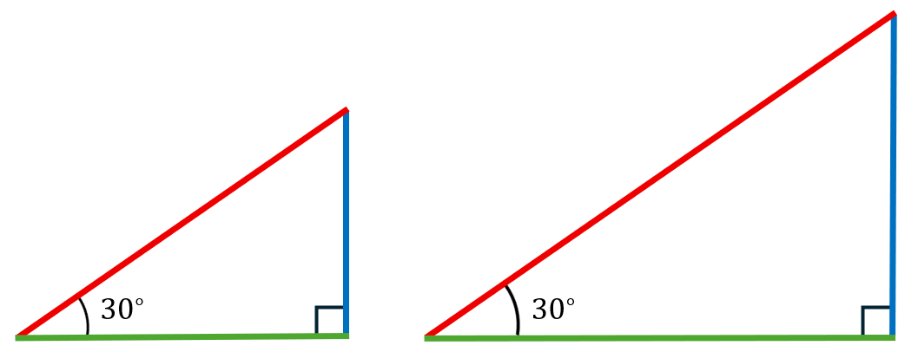
それぞれの三角形で考えてみましょう。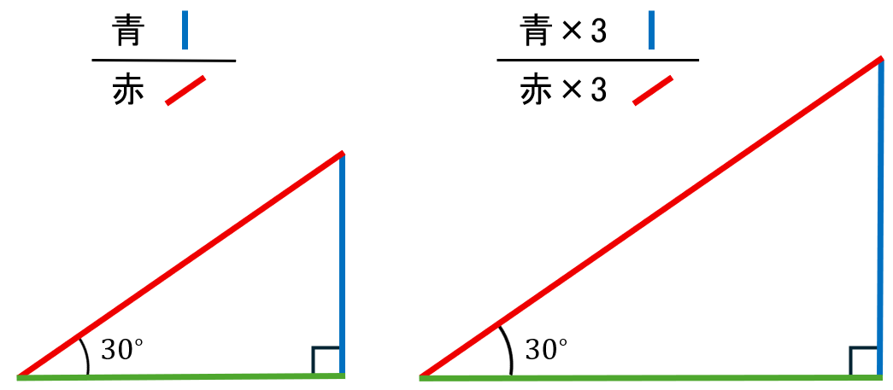
大きい三角形で考えてみると、分母も分子も元の三角形の3倍です。ということは分母・分子で打ち消しあうから、もとの三角形のときと同じ値になりますよね！ここからわかることは… 青÷赤の値は、どんな大きさになっても変わらない！ ちなみに図の角度が30°の直角三角形の場合、青÷赤の値は1/2です。しつこいかもしれませんが、大きさがどんなに違っていても、この形でさえあれば絶対に1/2です。 この値、価値がありそうですね。だって逆に言えば、青÷赤の値が1/2だって分かれば、角度が30°だと分かるからです。この大事そうな部分に名前をつけましょうか。 その昔、インドでは「jya（弓の弦）」と名付けられました。これがアラビアにわたって、「jaib」と書かれます。…あれ？アラビア語に、もうすでに「jaib」って単語ありますよ！？インドの言葉を音写したら、たまたまアラビア語の既存の単語と同じ綴りになってしまったんですね。「湾」って意味の単語だったそうです。 まいっか。ラテン語で「湾」は「sinus」と言うらしいですね。じゃあ、略してsinと書けば…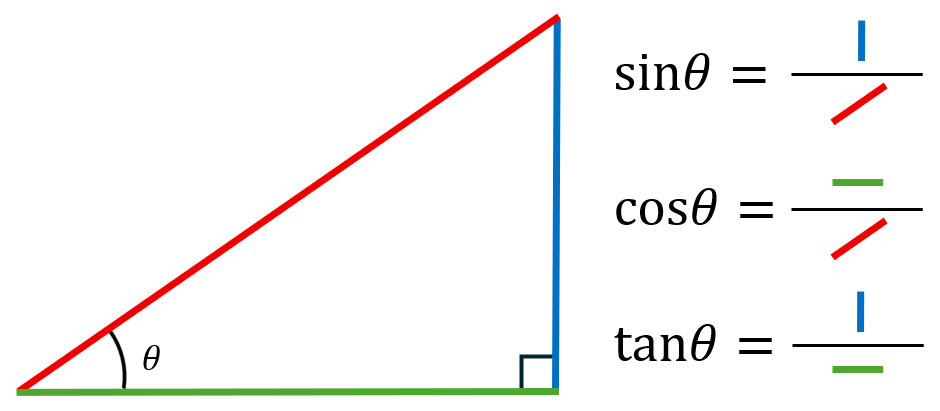
左に角θを置いた直角三角形の青÷赤は、数学の世界で\(\sin\theta\)と呼ばれることとなりました。同じように、緑÷赤を\(\cos\theta\)、緑÷青を\(\tan\theta\)なんて書きます。━━━━━━━━━━━━━━━━━━━━━━━━━━━━━━━━
■ 単位円を使った定義
さて、さっきは「青÷赤」つまり「特定の辺 ÷ 斜辺」でsinを定義しました。でも実はsinの定義って、教科書では「単位円」を使って説明されることが多いんです。急に円…？ちょっと我慢してください！ 「単位円って何？」…半径が1の円のことです。それだけです。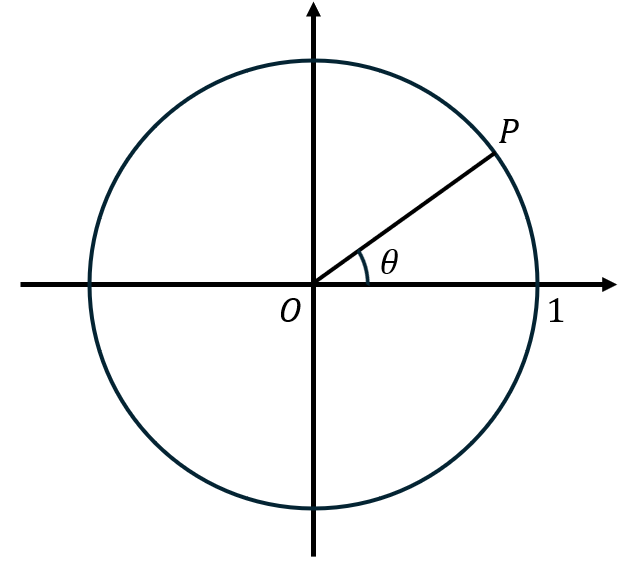
原点から点Pまでの角度をθとしたとき、 \(\sin\theta\) ＝ PのY座標 \(\cos\theta\) ＝ PのX座標 と定義します。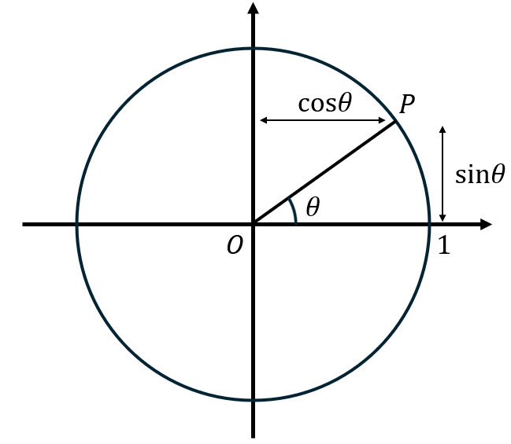
あれ、さっきと違う定義じゃない？ …鋭い！でも実は、まったく同じことを言っています。さっきの「青÷赤」を思い出しましょう。ここで、斜辺の長さ（赤）をあえて1にしてしまうとどうなるでしょうか？青 ÷ 赤 ＝ 青 ÷ 1 ＝ 青
割り算が消える！斜辺を1にするということは、「斜辺＝半径」の直角三角形を円にピタッと埋め込むということです。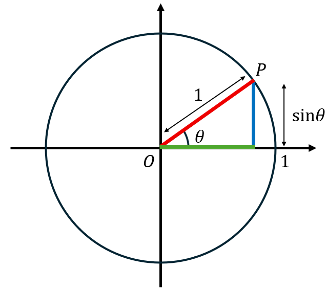
斜辺が1なら、「青÷赤」っていうのはずばり点のY座標です。つまり単位円での定義は、さっきの比の定義を「斜辺1」という特別な場合で言い換えたものに過ぎません。 じゃあなんで単位円を使うの？ 答えはシンプルで、計算が楽だからです。「斜辺が3の三角形」とか「斜辺が7の三角形」とか、いろんな大きさの三角形を毎回考えるのは面倒ですよね。どうせ比を取ったら同じ値になるんだから、最初から斜辺を1に固定してしまえばいい。そうすれば「座標を読むだけ」でsinやcosが分かります。 定義が変わったわけでも、意味が変わったわけでもありません。「青÷赤」という本質はそのまま、見た目をシンプルにしたのが単位円での定義です。━━━━━━━━━━━━━━━━━━━━━━━━━━━━━━━━
■ sinθのθに入る値って？
さて三角関数を見てきましたが、θには角度しか入れられないのでしょうか？「\(\sin 30°\)」の意味は分かったけど、他に表現の仕方はないのかな？昔の人は考えたわけです。 そこで画期的な表現方法が見つかりました。「30°」と実質同じ意味をもつ部分を、さっきの単位円から見つけてみましょうか。 角θは30°とします。この図の中に、\(\sin 30°\)の\(30°\)の部分を書き換えるのにうってつけの部分が一つあるんです。それは…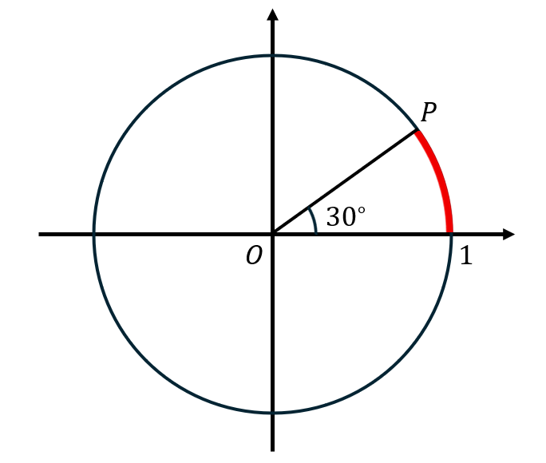
ここ！単位円の周の中で、角θ分切り取られた扇形の弧の長さです。実際に計算してみましょうか。半径1の円の周の長さは\(2\pi\)です。角度が30°ということは、この扇形は元の円を12当分したうちの1個です。まるまる1周で360°ですからね。 ということで扇形の弧の長さは\(\pi/6\)と分かりました。\(\sin 30°\)って、\(\sin(\pi/6)\)と書けば同じ意味にならない…？これが、角度を数値で書き換えた新しい表現、「弧度法」です！高校2年生で三角関数を習ってから先は、9割ぐらいこの書き方をすることになります。 弧度法を使うと、sin, cos, tanの書き方の幅が広がるんですよ。 まず、さっきやった通りの考え方で、「\(\sin(\pi/2)\)は1！」とか、「\(\cos(\pi/3)\)は\(1/2\)！」とか、ここまでは普通の三角比と一緒です。 では、「\(\sin 1\)」はどうなるでしょうか？ ちょっと考えてみましょう！ 1°じゃないですよ。1です。 「あれ？πは？」 なくてもOKです。だって、弧の長さが1ってだけなんですもん。図にすると、この部分ですね。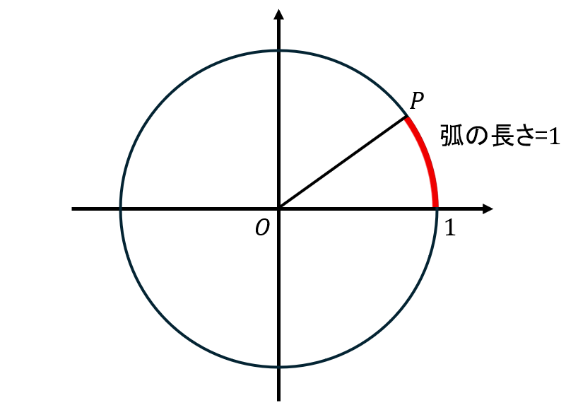
この時の高さ（かっこよく言うとy座標）に当たるのが「\(\sin 1\)」です。どれくらいの値かは…知らないですね(笑)\(\sin(\pi/3)\)が\(\dfrac{\sqrt{3}}{2}\)で、\(\pi/3\)が1.047ぐらいだから…\(\dfrac{\sqrt{3}}{2}\)よりちょっとだけ小さいぐらいの値？ とにかく重要なのは、sinの中に普通の値を入れて扱えるようになったってことです！めでたい！